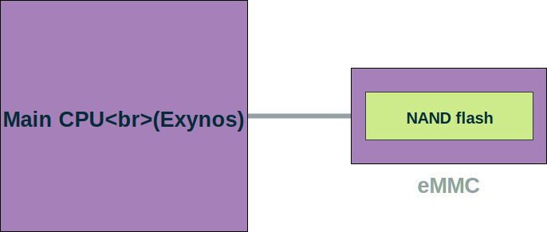
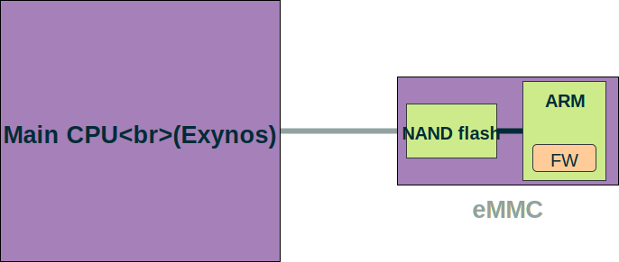
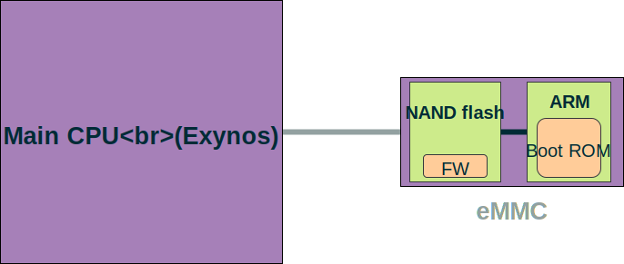
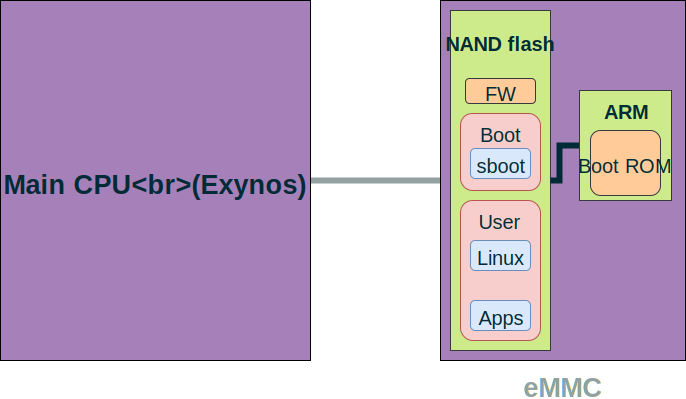
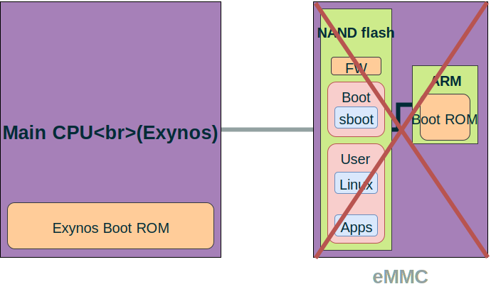

eMMC Hacking
(or: how I fixed long dead Galaxy S3 phones)
Oran AvrahamDecember 2017
"Sudden Death Syndrome"

Spoiler alert: they did
(Well, kind of...)Diagnosis
This is a working S3.

And this one is dead.

If you're lucky, you get this.

Or maybe this.

You also get "download mode".

You also get "download mode".

How S3 works
Then, samsung dropped a patch.
if (!strncmp(host->card->cid.prod_name, "VTU00M", 6) &&
(host->card->cid.prod_rev == 0xf1) &&
(mmc_start_movi_smart(host->card) == 0x2))
host->card->movi_ops = 0x2;
if (host->card->movi_ops == 0x2)
mmc_start_movi_operation(host->card);
mmc: Soft-patch MoviNAND VTU00M (16GB) eMMC failure
Linux/drivers/mmc/core/mmc.c
eMMC bus introduction
eMMC is basically SD card in BGA form


HardKernel ODROID eMMC reader board
Essentially a NAND flash chip with convenient bus
64 commands (CMD0, CMD1, ..., CMD63), e.g.:
32-bit argument
Categorized into classes
Class 8 contains an interesting set of commands

Back to the patch
if (!strncmp(host->card->cid.prod_name, "VTU00M", 6) &&
(host->card->cid.prod_rev == 0xf1) &&
(mmc_start_movi_smart(host->card) == 0x2))
host->card->movi_ops = 0x2;
if (host->card->movi_ops == 0x2)
mmc_start_movi_operation(host->card);
mmc: Soft-patch MoviNAND VTU00M (16GB) eMMC failure
Linux/drivers/mmc/core/mmc.c
int mmc_start_movi_operation(struct mmc_card *card)
{
mmc_movi_cmd(card->host, 0xEFAC62EC); // Enter secret backdoor mode
mmc_movi_cmd(card->host, 0x10210000);
mmc_movi_erase_cmd(card->host, 0x00040300, 0x4A03B510); // 10 B5...
mmc_movi_erase_cmd(card->host, 0x00040304, 0x28004790);
mmc_movi_erase_cmd(card->host, 0x00040308, 0xE7FED100);
mmc_movi_erase_cmd(card->host, 0x0004030C, 0x0000BD10);
mmc_movi_erase_cmd(card->host, 0x00040310, 0x00059D73);
mmc_movi_erase_cmd(card->host, 0x0005C7EA, 0xFD89F7E3);
mmc_movi_cmd(card->host, 0xEFAC62EC); // Leave secret backdoor mode
mmc_movi_cmd(card->host, 0x00DECCEE);
}
mmc_movi_cmd is basically eMMC CMD62
This is an eMMC...

(next to a Thumb™)
How S3 works
Lo and behold...
Here comes Samsung's patch.Please prepare your C skillz.
void sub_40300()
{
if (!sub_59D72())
while (1);
}

The other patch
0x5C7EA: BL 0x40300
jmp to the first patch.
DEAR S3 CUSTOMERS
WE "FIXED" IT

Galaxy S3 freezing with lockups, screen not responding...
and ending up with unsual rebooting and bootlooping... Angry S3 users reporting this problem...
Galaxy S3 keeps freezing every 5 mins (50+ freezes a day)
0xEFAC62EC 0x10210000
mmc_movi_vendor_cmd(card, 0xEFAC62EC);
mmc_movi_vendor_cmd(card, 0x10210000);
mmc_movi_erase_cmd(card, 0x0004DD9C, 0x000000FF);
mmc_movi_vendor_cmd(card, 0xEFAC62EC);
mmc_movi_vendor_cmd(card, 0x00DECCEE);
[MMC] Patch the firmware of certain Samsung emmc parts to fix a bug
Linux/drivers/mmc/core/quirks.c
But there was something else afterwards...
#ifdef TEST_MMC_FW_PATCHING
mmc_movi_vendor_cmd(card, 0xEFAC62EC);
mmc_movi_vendor_cmd(card, 0x10210002); // this is a 2
mmc_movi_erase_cmd(card, 0x0004DD9C, 0x00000004);
mmc_movi_read_cmd(card, (u8 *)buffer);
pr_debug("buffer[0] is 0x%x\n", *(u8 *)buffer);
mmc_movi_vendor_cmd(card, 0xEFAC62EC);
mmc_movi_vendor_cmd(card, 0x00DECCEE);
#endif
Maybe this is Samsung's way of reading the RAM?
for (unsigned addr = 0; addr <= 0x80000; addr += 4) {
mmc_movi_vendor_cmd(card, 0xEFAC62EC);
mmc_movi_vendor_cmd(card, 0x10210002);
mmc_movi_erase_cmd(card, addr, 0x00000004);
mmc_movi_read_cmd(card, (u8 *)buffer);
mmc_movi_vendor_cmd(card, 0xEFAC62EC);
mmc_movi_vendor_cmd(card, 0x00DECCEE);
write(outfd, buffer, 4);
}
Reversing the firmware?
The firmware contained strings! a string :-("REL_ASSERT : (PC[%x] SP[%x] LR[%x])\n"Reversing the firmware
CPU seems to be ARM Cortex-M3 (only Thumb!)
Found 0xEFAC62EC
Found a table of 64 entries - command handlers
Worked my way to reverse most of the relevant code
A lot of MMIO registers of unknown hardware
eMMC Internals
Normal storage
- Read: read data
- Write: write data
NAND flash storage
- Read: read data
- Write: turn off bits (1→0)
- Erase: erase a whole erase-block (0→1)
Erase-blocks have a limited program/erase cycles
Flash translation layer
Firmware is responsible for:
- Wear leveling
- Bad block management
- eMMC bus communication

VTU00M 0xF1 bug 🐞
FTL metadata gets corrupted once
⇒ On each boot, FTL raises a CPU exception
⇒ CPU enters an infinite loop
⇒ eMMC is essentially dead
Samsung's patch: Metadata about to get corrupted? Halt CPU!
DO NOT TRY TO FIX THE BUG...
INSTEAD, REALIZE THERE IS NO BUG
eMMC Memory layout

Boot ROM
Initializes hardware and loads firmware *from flash*
Has its own machinery for eMMC commands
(when firmware loading fails)
Basically a stripped down firmware (no FTL)
How S3 works
If only we could talk to the boot ROM...
However, firmware loading actually succeeds
Firmware executes, enters a loop ⇒ no chance
Right?
On boot (sub_7DBC), a timer is being set for 35ms
If during this period some interrupt fires -
a value (MMIO) is compared to 0x69FF87A9
In that case - firmware loading is skipped!

Wait, what?
Phone is dead. How do we even talk with the eMMC?
Sure, I could've used a hardware mod, however...
Recap: If you're lucky, you get this.
But how?
How S3 works
A friend had a bricked S3 which *does load* sboot
eMMC has two partitions: boot and user
Only user's metadata was corrupted
I suspect this is a common scenario
How S3 breaks
sboot has a DFU mode called "download mode"
Protocol over USB; Loke ⟷ Odin
No way of sending low-level eMMC commands

sboot Exploitation
Taken from sboot PIT packets handling
if (is_dump == 1) {
int sz, data, part;
part = /* read from USB packet */;
sz = -500 * part + 0x2000;
if (sz >= 500)
sz = 500;
send_packet(&pit_buf[500 * part], sz);
} else {
sz = /* read from USB packet */;
reply_packet(pkt_type, 0);
read_packet(pit_buf, sz);
reply_packet(pkt_type, 0);
}
sboot vulnerabilities
- Heap relative read
- Heap overflow
Eventually found out this is actually not a 0-day
Unpatched for S3, but silently fixed in recent devices
sboot heap implementation
*All* chunks are saved in circular doubly-linked list
Choose first best fit
Split chunks from the end
No security mitigations at all :-)
Exploitation strategy
Goal: achieve write-what-where
- Figure out
bufferaddress - Fake a chunk header with arbitrary large size
- Upon malloc(sz):
addr = chunk + chunk->size - sz - Set
chunk->size = addr - chunk + sz
But what if it's really dead?
How S3 utterly breaks
How S3 almost breaks
Booting from SD card
sboot boots into "SDCARD mode" - no USB :-(
ODROID-X: same CPU, but 1bl happily loads anything!
Patch sboot and exploit it over USB :-)
Totally Revolutionary SDCard Bootloader For Galaxy S III
UnBrickable SD necromancy- Totally restore your device.
https://github.com/dmarszk/exynos4_uboot
AdamOutler, Rebellos, Ralekdev
Repeat for x:
- Power off eMMC
- Power on eMMC
- Quickly send CMDx with arg
0x69FF87A9 - Wait 200ms
- Send any command supported by boot ROM
- Check if you get a response
✗ CMD0(0x69FF87A9) fails
✓ CMD1(0x69FF87A9) works!
eMMC repairing
There are two revisions of VTU00M:
- Firmware 0xf1 - buggy
- Firmware 0xf7 - bug is fixed
Goal: Update chip to 0xf7 and format FTL metadata